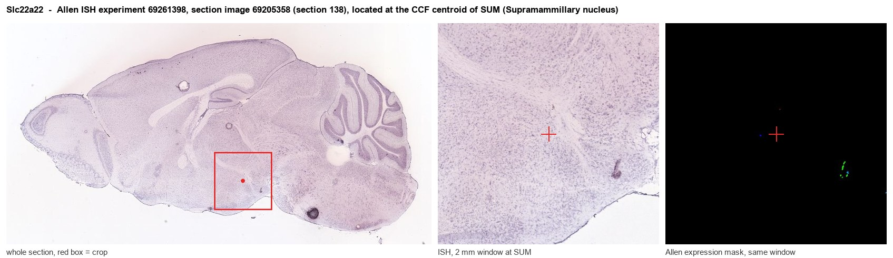

Slc22a22
Solute carrier family 22 member 22 (Prostaglandin-specific organic anion transporter)
Spatial tier: RESTRICTED · Class: GPCR · Top region: SUM (Supramammillary nucleus) · Positive regions: 13/554
45.3Discovery Score
35.1Targetability Score
CEvidence grade C
What this means: Slc22a22: fine CCF profile is restricted toward SUM (top regions: SUM, MMme, MMl, ILA2/3, MMd; 13 positive regions); direct spatial validation is still required.
Function in SUM: evidence, prediction, innovation
- Gene function
- Slc22a22 encodes OAT-PG, an organic anion transporter of the SLC22 family that selectively takes up prostaglandin E2. It was cloned from kidney, where it clears PGE2 from the cortical interstitium; its expression is regulated by glucocorticoids and by sex hormones. Despite being grouped with GPCR-like annotations, it is a transporter, not a receptor.
- Region function
- The supramammillary nucleus is a small posterior hypothalamic cell group projecting heavily to medial septum, dentate gyrus and CA2; it signals novelty and arousal and sets hippocampal theta rhythm and wakefulness.
- Published in this region
- inferred No region-specific literature found. All published OAT-PG work is renal: glucocorticoid control of its transcription (Hatano 2014), a sex difference in renal expression that sets basal PGE2 (Hatano 2012), and reduced expression during pregnancy (Kazama 2013). No brain expression or function has been reported for Slc22a22, while the supramammillary nucleus itself is well defined as a glutamatergic arousal node (Pedersen 2017).
- Predicted function
- Prediction: if supramammillary neurons really express OAT-PG they would be able to take up and clear extracellular PGE2, giving this novelty-and-arousal node a direct handle on prostaglandin signalling during fever and inflammation. That predicts inflammatory states raise local PGE2 in SUM and thereby modulate hippocampal theta and novelty responses, and that Slc22a22 deletion or a prostaglandin-transport blocker would exaggerate PGE2-driven changes in arousal and theta power. Because this is otherwise a kidney gene, expression validation must come first.
- Innovation
- ★★★★★ 5/5 Prostaglandin uptake by an arousal nucleus is an entirely unexplored idea, though the complete absence of gene-specific reagents raises the cost of testing it.
- Tools
- None known for Slc22a22 itself: no knockout, Cre line or validated antibody in common use. Prostaglandin transport can be probed pharmacologically with bromosulfophthalein, probenecid and indomethacin; supramammillary neurons are accessible with Vglut2-IRES-Cre (JAX 028863) and by retro-AAV from dentate gyrus or medial septum.
- References
Direct evidence located at the region

Allen ISH experiment 69261398, section image 69205358 (section 138): the section that contains the CCF centroid of Supramammillary nucleus according to the Allen image-to-atlas alignment (reference_to_image), with a 2 mm window around that point. Left: whole section, red box = window. Middle: ISH signal. Right: Allen's expression-mask view of the same window. open this image in the Allen viewer
Look it up yourself: Allen Mouse Brain ISH for Slc22a22Allen reference atlas: SUM (structure 525)ABC Atlas MERFISH viewer(in the ABC Atlas choose dataset MERFISH-C57BL6J-638850-CCF, colour cells by gene "Slc22a22" or by parcellation_substructure "SUM")All genes confined to SUM + 3-D brain
Direct spatial evidence
MERFISH REGION LOCATOR

Regional expression figure

Predicted WMB × fine-CCF profile; not direct full-transcriptome spatial measurement.
Spatial profile
Evidence and specificity
- Evidence status
- PREDICTED_FINE
- Direct sources
- None; predicted localization only
- Exclusive threshold
- 12 positive regions out of 554
- Spatial specificity
- 0.328
- Top-region fraction
- 0.094
- Filter status
- PASS
Interpretation limits
- Cell-type-to-region projection is imputed expression, not direct spatial measurement.
- Adult reference atlases do not establish stability across age, sex, strain, state, or disease.
- Transcript abundance does not guarantee protein abundance or genetic-tool performance.